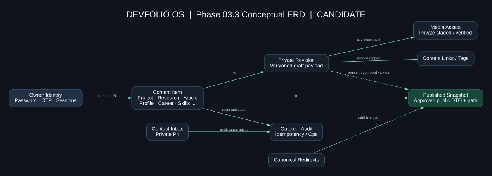
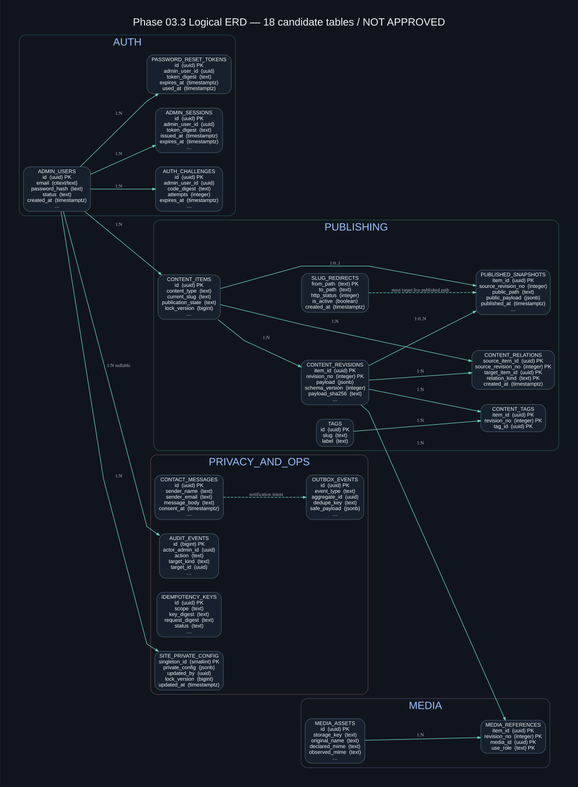
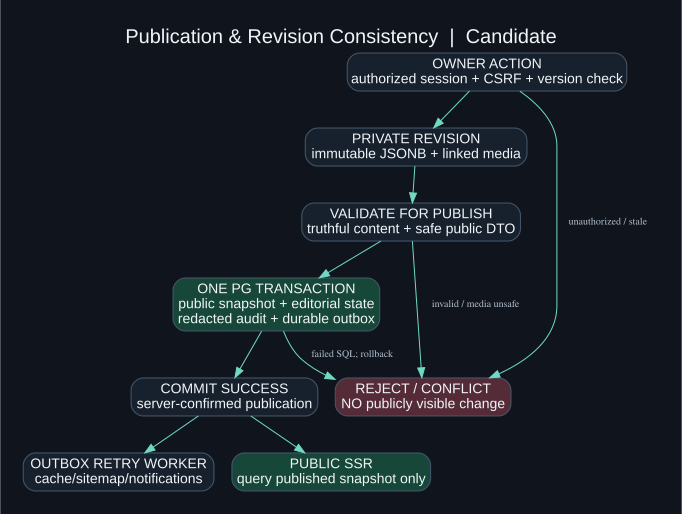

DEVFOLIO OS / SYSTEM ARCHITECTURE / 03.3
Database Architecture & Entity Relationship Design
PostgreSQL candidate for a dark-first, published-only SSR portfolio and protected owner CMS. All SQL/schema and ADR choices remain proposals pending SRS owner approval.
18
Proposed tables
116
Field definitions
17
ERD relationships
40
Review checks / NOT RUN
DESIGN PROPOSAL — NOT APPROVED / NOT DEPLOYED
Phase 03.2 design-only approval is recorded separately. SRS, physical DB schema/API contract, Penpot and accessibility verification remain open. This package creates no working database and reports no runtime test passes.
Architecture diagrams


